China Employee Termination in 2026: Pulse Operations-Simulation Brief for Foreign Employers
Key takeaways
- Foreign employers can improve China termination outcomes by rehearsing high-risk failure scenarios before live execution.
- Simulation reveals weak controls faster than static policy reviews.
- The most important stress tests are route contradiction, payroll lock break, script divergence, and closure retrieval failure.
- Teams should measure response speed, not just policy completeness.
- This Pulse brief is impact-first; legal depth is provided in a secondary appendix.
What changed and why this matters now
Most teams only discover control weaknesses during live cases, when mistakes are expensive. A simulation approach shifts learning earlier. Instead of hoping processes work under pressure, teams can rehearse likely failures and harden controls before the next real termination cycle.
This run rotates to an operations-simulation format for foreign employers. It focuses on practical rehearsal design, response timing, and governance improvements that reduce dispute risk.
Plain-language legal context first
China termination execution must stay consistent across legal route, facts, payout treatment, and communication. Real risk rises when one layer changes and others do not catch up. For foreign teams, this often happens during handoffs, deadlines, and last-minute updates.
National legal rules establish baseline requirements, but city-level implementation still affects practical risk. Simulations should therefore include locality-sensitive assumptions and escalation paths.
Four simulation drills that matter most
Drill 1 — Route contradiction drill
Scenario: new fact appears that weakens current route rationale.
Objective: test whether team pauses downstream actions fast enough.
Pass criteria: route is revalidated before payroll/communication proceeds.
Drill 2 — Payroll lock break drill
Scenario: multiple worksheet versions appear within 24 hours of planned communication.
Objective: test single-owner recovery and version control discipline.
Pass criteria: one validated worksheet restored, communication held until lock confirmed.
Drill 3 — Script divergence drill
Scenario: manager uses outdated language after legal/payroll update.
Objective: test script refresh speed and escalation discipline.
Pass criteria: outreach paused, script corrected, re-brief complete with evidence.
Drill 4 — Closure retrieval drill
Scenario: post-case query requests complete rationale and payout trail within 15 minutes.
Objective: test archive quality and retrieval readiness.
Pass criteria: full record package retrieved and internally consistent.
Simulation scorecard (simple and practical)
Score each drill on four dimensions (1-5): detection speed, containment speed, cross-functional alignment, and evidence quality. A total score below 14 means controls are not production-ready for high-pressure cases.
Track trendline weekly. Improvement in detection and containment speed is often the earliest indicator that governance is getting stronger.
Practical scenarios
Scenario A: drill exposes hidden owner confusion
Two teams think they own payroll lock recovery.
Simulation finding: escalation delay and duplicated edits.
Fix: single-owner assignment protocol and escalation matrix update.
Scenario B: script fix happens but no evidence trail
Communication corrected quickly, but no proof of re-brief exists.
Simulation finding: defensibility gap.
Fix: add mandatory re-brief log artifact.
Scenario C: retrieval fails despite “complete” closure
Archive exists but cannot answer sequence-of-events question quickly.
Simulation finding: closure quality overstated.
Fix: tighten index standard and retrieval test gate.
Daily operations SOP (role ownership)
Simulation lead (HR Ops/PMO): schedules drills, captures timing metrics, and publishes findings.
Legal owner: owns route contradiction responses and locality assumptions.
Payroll owner: owns worksheet lock recovery and IIT clarity.
Comms owner: owns script correction and escalation documentation.
Closure owner: owns retrieval test readiness and archive quality.
Document checklist for simulation governance
- Drill scenario sheet + trigger conditions
- Owner map + escalation chain
- Timing log (detect/contain/resolve)
- Evidence artifacts (updated memo, worksheet, script, retrieval record)
- Post-drill improvement actions + due dates
Exception handling playbook
- Failed drill pass criteria: treat as control defect; no process sign-off until remediation.
- Repeated failure in same drill: initiate root-cause review and tooling change.
- Drill passes but evidence weak: mark conditional pass and rerun with stricter evidence requirement.
- Local interpretation uncertainty in drill: add locality validation checkpoint before final closure.
System implementation notes
Add simulation objects in workflow tooling: drill ID, owners, score, defects, and remediation status. Link unresolved critical defects to communication gating so known failures cannot be ignored.
Publish weekly metrics: average drill score, mean detection time, mean containment time, repeat defect rate, and post-communication correction rate.
Common mistakes and prevention
- Mistake: running drills without measurable pass criteria.
Prevention: define numeric thresholds for detection/containment and evidence quality.
- Mistake: treating drills as training only.
Prevention: connect findings to live workflow controls.
- Mistake: skipping locality-sensitive assumptions in drills.
Prevention: include city-level interpretation checks in route scenarios.
- Mistake: no follow-through on post-drill actions.
Prevention: assign remediation owners with deadlines and tracking.
What to do now
Run the four simulation drills over the next two weeks for your active China termination process. Start with one pilot business unit and measure baseline response times. Use findings to harden workflow gates before expanding to all teams.
At leadership level, review only three metrics at first: failed drill count, average containment time, and repeat-defect rate. This keeps governance focused and actionable.
What to watch next
- Whether payroll lock break drills remain the lowest-scoring.
- Whether script divergence defects reduce after re-brief logging is enforced.
- Whether closure retrieval time improves after archive index upgrades.
2-week simulation rollout plan
Week 1 (Days 1-5): Baseline cycle. Run all four drills once with current controls and capture baseline scores for detection speed, containment speed, alignment, and evidence quality. Do not optimize during this phase; the value is in seeing real weakness patterns.
Week 1 output: one ranked defect list by business impact (high/medium/low), plus assigned owners and deadlines.
Week 2 (Days 6-10): Control hardening cycle. Implement top three remediation actions (for example, single-owner worksheet lock, script version linking, and closure retrieval gate). Then rerun the same four drills to measure change versus baseline.
Week 2 output: before/after score delta, updated SOP requirements, and recommendation on whether the process is ready for broader rollout.
FAQ
1) Why simulate instead of just auditing documents?
Simulations test behavior under pressure, which documents alone cannot capture.
2) How often should drills run?
At least monthly, and after major process or policy changes.
3) Which drill usually exposes the biggest risk?
Payroll lock break drills often reveal the most expensive weaknesses.
4) Can we skip drills if no recent incidents occurred?
No; absence of incidents may reflect low volume, not strong controls.
5) Is this legal advice?
No. It is an operational risk-control framework and not legal or tax advice.
6) What KPI improves first when drills work?
Detection and containment times usually improve before dispute rates do.
Legal depth appendix (secondary)
This brief is anchored in the PRC Labor Contract Law baseline and complemented by practitioner and payroll references used by multinational employers. It provides operational governance guidance and does not replace legal advice. High-impact matters should be reviewed with qualified local advisors.
Soft CTA
If your team needs compliance-first support for China employee termination, China-Payroll.com can help implement simulation-led controls, payroll lock governance, and defensible closure standards.
Disclaimer
This content is informational only and does not constitute legal, tax, or employment advice.
Sources
- National People’s Congress of China, Labor Contract Law of the PRC (English), accessed 2026-03-07: http://www.npc.gov.cn/zgrdw/englishnpc/Law/2007-12/13/content_1384064.htm
- ICLG, Employment & Labour Laws and Regulations: China, accessed 2026-03-07: https://iclg.com/practice-areas/employment-and-labour-laws-and-regulations/china
- Littler, Key Recent Developments in China’s Employment Law, accessed 2026-03-07: https://www.littler.com/news-analysis/asap/key-recent-developments-chinas-employment-law-china-us-comparative-perspective
- PwC Tax Summaries, China Individual — Taxes on Personal Income, accessed 2026-03-07: https://taxsummaries.pwc.com/peoples-republic-of-china/individual/taxes-on-personal-income
- China Briefing, China Human Resources and Payroll Guide, accessed 2026-03-07: https://www.china-briefing.com/doing-business-guide/china/human-resources-and-payroll
Need local employment support in China?
If you need a compliance-first partner for hiring, payroll, and risk controls in China, China-Payroll.com can help evaluate the right setup.
Image Prompt Pack
Create a 16:9 hero image for article title: 'China Employee Termination in 2026: Pulse Operations-Simulation Brief for Foreign Employers'. Scene: global operations team evaluating workforce model options for China market entry. Include motifs: decision matrix,…